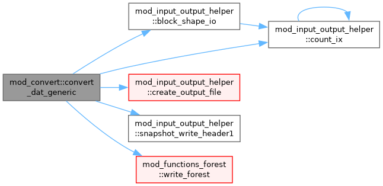

mod_convert Module Reference
Data Types | |
| interface | sub_convert_vars |
| type | convert_vars_method |
Functions/Subroutines | |
| subroutine | init_convert () |
| subroutine | add_convert_method2 (phys_convert_vars, nwc, aux_variable_names, file_suffix) |
| subroutine | add_convert_method (phys_convert_vars, nwc, dataset_names, file_suffix) |
| subroutine | convert_all () |
| subroutine | convert_dat_generic (nwc, dataset_names, file_suffix, convert_vars) |
Variables | |
| type(convert_vars_method), pointer | head_convert_vars_methods |
Function/Subroutine Documentation
◆ add_convert_method()
| subroutine mod_convert::add_convert_method | ( | external double precision function, dimension(ixo^s, 1:nwc)(integer, intent(in) ixi, integer, intent(in) l, integer, intent(in) ixo, l, double precision, dimension(ixi^s, 1:nw), intent(in) w, double precision, dimension(ixi^s,1:ndim), intent(in) x, integer, intent(in) nwc) | phys_convert_vars, |
| integer, intent(in) | nwc, | ||
| character(len=*), dimension(:), intent(in) | dataset_names, | ||
| character(len=*), intent(in) | file_suffix ) |
◆ add_convert_method2()
| subroutine mod_convert::add_convert_method2 | ( | external double precision function, dimension(ixo^s, 1:nwc)(integer, intent(in) ixi, integer, intent(in) l, integer, intent(in) ixo, l, double precision, dimension(ixi^s, 1:nw), intent(in) w, double precision, dimension(ixi^s,1:ndim), intent(in) x, integer, intent(in) nwc) | phys_convert_vars, |
| integer, intent(in) | nwc, | ||
| character(len=*), intent(in) | aux_variable_names, | ||
| character(len=*), intent(in) | file_suffix ) |
◆ convert_all()
| subroutine mod_convert::convert_all |
◆ convert_dat_generic()
| subroutine mod_convert::convert_dat_generic | ( | integer, intent(in) | nwc, |
| character(len=*), dimension(:), intent(in) | dataset_names, | ||
| character(len=*), intent(in) | file_suffix, | ||
| external double precision function, dimension(ixo^s,1:nwc)(integer, intent(in) ixi, integer, intent(in) l, integer, intent(in) ixo, l, double precision, dimension(ixi^s,1:nw), intent(in) w, double precision, dimension(ixi^s,1:ndim), intent(in) x, integer, intent(in) nwc) | convert_vars ) |
Definition at line 101 of file mod_convert.t.
Here is the call graph for this function:

◆ init_convert()
| subroutine mod_convert::init_convert |
Definition at line 31 of file mod_convert.t.
Variable Documentation
◆ head_convert_vars_methods
| type(convert_vars_method), pointer mod_convert::head_convert_vars_methods |
Definition at line 28 of file mod_convert.t.
Generated by